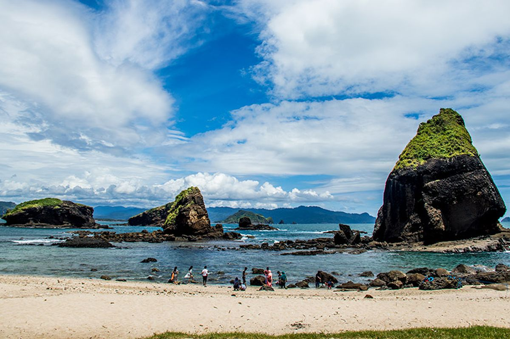

Pantai Papuma, pasir putih di selatan Jember
Pantai dengan tebing hijau dan gugusan batu karang di tengah laut, cocok untuk liburan akhir pekan.
Lihat info kunjunganTentang Papuma
Papuma terletak di Kecamatan Ambulu, Kabupaten Jember, Jawa Timur. Nama Papuma sendiri singkatan dari Pasir Putih Malikan. Dari tepi pantai, pengunjung bisa melihat Tanjung Papuma dan batu-batu karang besar yang berdiri di laut.
Pantai ini dikelilingi hutan, jadi udaranya teduh dan cocok untuk berjalan santai sambil menikmati pemandangan.
Yang bisa dilakukan
| Kegiatan | Keterangan |
|---|---|
| Bermain di pantai | Berjalan di pasir putih dan bermain air di tepi pantai |
| Menikmati sunset | Sore hari adalah waktu terbaik untuk berfoto |
| Berkemah | Ada area camping di dekat pantai |
| Jalan di tebing | Jalur kecil dengan pemandangan laut dari ketinggian |
Tips berkunjung
- Datang pagi atau sore supaya tidak terlalu panas.
- Bawa topi, tabir surya, dan air minum sendiri.
- Pakai alas kaki yang nyaman untuk jalan di tebing.
- Hati-hati saat bermain di dekat karang, ombak bisa besar.
- Bawa kantong sampah, jaga kebersihan pantai.
Info kunjungan
Pantai PapumaKecamatan Ambulu, Kabupaten Jember
Jawa Timur
Jam buka dan harga tiket: cek langsung di loket atau akun resmi pengelola